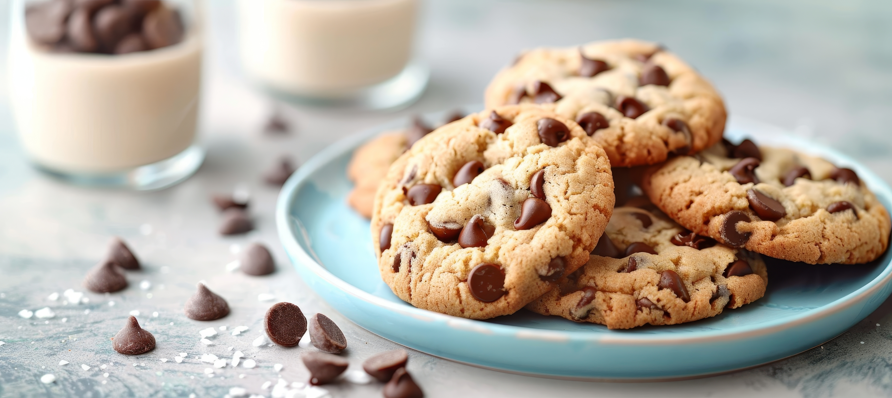

These classic chocolate chip cookies are crispy on the edges, chewy in the middle, and packed with chocolate chips. Perfect for any occasion, from lunch boxes to holiday gatherings. This foolproof recipe has been tested countless times and always delivers delicious results.
ingredients.txt_□×
Ingredients
2¼ cups all-purpose flour
1 teaspoon baking soda
1 teaspoon salt
1 cup (2 sticks) butter, softened
¾ cup granulated sugar
¾ cup packed brown sugar
2 large eggs
2 teaspoons vanilla extract
2 cups chocolate chips
1 cup chopped walnuts (optional)
cookiepic.jpeg_□×

instructions.txt_□×
Instructions
Preheat oven to 375°F (190°C). Line baking sheets with parchment paper.
Mix dry ingredients: In a medium bowl, whisk together flour, baking soda, and salt. Set aside.
Cream butter and sugars: In a large bowl, beat softened butter with both sugars until light and fluffy, about 2-3 minutes.
Add eggs and vanilla: Beat in eggs one at a time, then stir in vanilla extract.
Combine wet and dry: Gradually blend in the flour mixture until just combined. Don't overmix.
Fold in chocolate chips: Stir in chocolate chips and nuts (if using).
Shape and bake: Drop rounded tablespoons of dough onto prepared baking sheets, spacing 2 inches apart. Bake 9-11 minutes until golden brown.
Cool: Let cool on baking sheet for 2 minutes, then transfer to wire rack.